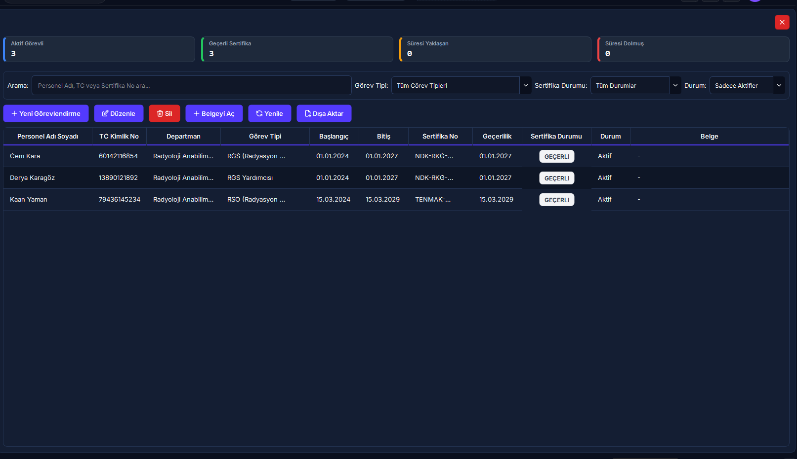
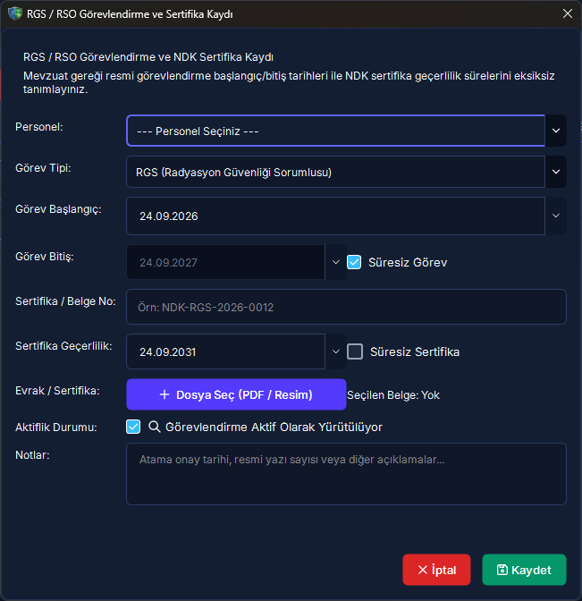

RGS / RSO Görevlendirme ve Sertifika Takibi
Nükleer Düzenleme Kurumu (NDK) 06.03.2025 tarihli Radyasyondan Korunma Sorumluları Usul ve Esasları uyarınca güncel resmi unvanı Radyasyondan Korunma Sorumlusu (RKS) olan — uygulama menülerinde RGS, RGS Yardımcısı ve RSO olarak kullanılan — sorumluların atamalarını, 5 kademeli sertifika vize takibini, atama yazısı PDF üretimini, imzalı belge sürüm tarihçesini ve şifreli KVKK evrak kasasını yönetmenizi sağlar.
Kısa Reçete: RGS / RSO Ataması, Atama Yazısı ve Vize Takibi
Kurumdaki RGS, RGS Yardımcısı ve RSO sorumlularının yasal atamalarının, 5 yıllık NDK sertifika vizelerinin ve imzalı atama yazılarının eksiksiz takip edilmesi.
[Yeni Görevlendirme] ile personel, görev tipi, tarihler ve sertifika numarasını girip [Kaydet]'e basın; [Atama Yazısı Üret (PDF)] ile resmi yazı taslağını oluşturup imzalandıktan sonra [İmzalı Belge Yükle] ile arşivleyin.
Vize bitimine 60 ve 30 gün kala sarı/turuncu erken uyarı üretilir; imzalı belge yüklendiğinde eski taslak silinmeden sürüm geçmişine taşınır; onaya tabi rollerin işlemleri Merkezi Onaylar kuyruğuna iletilir.
5N1K Kural ve Arayüz Çözümleme Tablosu
Çoklu görevlendirme, 5 kademeli sertifika geçerlilik motoru, imzalı belge yaşam döngüsü ve veri bütünlüğü kilidi.
Kritik Sahada Yanlış Bilinen Kurallar (Mit Avcısı)
Süreç Akış Şeması
Onaya Tabi mi?"} C -->|Evet| D["Merkezi Onaylar Kuyruğuna İletilir"] C -->|Hayır| E["Doğrudan Kayıt Oluşturulur"] end subgraph S2 ["2. AŞAMA: BELGE YAŞAM DÖNGÜSÜ"] direction LR F["Atama Yazısı Üret (PDF): İmza Bekliyor"] --> G["İmzalı Belge Yükle"] G --> H["Eski Taslak Arşive, İmzalı Nüsha Aktife Geçer"] end subgraph S3 ["3. AŞAMA: VİZE İZLEME VE DENETİM"] direction LR I{"Kalan Vize Süresi"} -->|> 60 Gün veya Süresiz| J["Geçerli / Süresiz"] I -->|31–60 Gün| K["Yaklaşıyor (Sarı Alarm)"] I -->|≤ 30 Gün / Geçmiş| L(["Kritik / Süresi Doldu Alarmı"]) end D & E ==> F H ==> I
- Atama ve Onay: Personel, rol (RGS, RGS Yardımcısı, RSO), tarihler ve sertifika bilgileri girilir; onaya tabi kullanıcılarda işlem yönetici onayına düşer.
- Belge Yaşam Döngüsü: Antetli atama yazısı taslağı üretildikten sonra imzalı nüsha yüklenerek sürüm tarihçesi (Taslak → Arşiv → İmzalı) oluşturulur.
- Vize İzleme ve Denetim: 60 ve 30 gün eşikleriyle yaklaşan vizeler uyarılır; Web Portalındaki denetim kokpiti ile eşzamanlı izlenir.
Arayüz Ekran Görünümleri


Adım Adım İşlem Rehberi
1. Yeni RGS / RSO Görevlendirmesi ve NDK Sertifikası Tanımlama
- Sol menüden [RGS / RSO Görevlendirme ve Sertifika Takibi] ekranını açıp araç çubuğundaki [Yeni Görevlendirme] butonuna tıklayın.
- Açılan formda Personel, Görev Tipi (RGS, RGS Yardımcısı veya RSO), Görev Başlangıç tarihi ile süreliyse bitiş tarihini (daimi atamada [Süresiz Görev]) belirleyin.
- Sertifika / Belge No alanını ve NDK 5 yıllık vize bitiş tarihini (yalnızca vize muafiyeti olan kurumsal olurlarda [Süresiz Sertifika]) girin; [Dosya Seç (PDF / Resim)] ile varsa sertifikayı yükleyin, [Görevlendirme Aktif Olarak Yürütülüyor] kutusunu doğrulayıp [Kaydet] butonuna basın.
2. Resmi Atama Yazısı Üretme, İmzalı Belge Yükleme ve Sürüm Geçmişi
- Tablodan görevlendirmeyi seçip [Atama Yazısı Üret (PDF)] butonuna tıklayarak kurum antetli taslak görevlendirme yazısını oluşturun (belge durumu İmza Bekliyor rozetini alır).
- Başhekimlik ve ilgili sorumlu imzaları tamamlandığında satırı seçip [İmzalı Belge Yükle] butonundan taranmış veya e-imzalı PDF/görsel nüshayı yükleyin; sistem eski taslağı silmeden arşive kaldırır ve belge durumunu İmzalı olarak günceller.
- Aktif belgeyi açmak için [Belgeyi Aç], taslaktan imzalıya tüm sürümleri ve doğrulama özetini görmek için [Belge Geçmişi] butonunu kullanın; listeyi dışa aktarmak için [Dışa Aktar] butonuna basın.
3. Düzenleme, Pasife Alma ve Web Portalı Denetim Takibi
- Süre veya sertifika no güncellemek için satırı seçip [Düzenle] butonunu kullanın (personel alanı veri bütünlüğü için kilitlidir; görevi başkasına devretmek için eski kaydın aktiflik onayını kaldırıp yeni kişi adına yeni kayıt açın).
- Web Portalı Takibi: Çalışanlar kendi profil sayfalarından aktif RGS/RSO atamalarını ve sertifika geçerlilik tarihlerini görüntüler; yöneticiler ise Denetim Hazırlık panosundan kurumun RKS görevlendirme oluru ve sertifika uygunluk durumunu tek bakışta izler.
Sıkça Sorulan Sorular (SSS)
Bir personel aynı anda birden fazla aktif RGS/RSO görevlendirmesine sahip olabilir mi?
"Süresiz Sertifika" seçeneği ne zaman kullanılmalıdır?
NDK sertifikaları kural olarak 5 yıllık vizeye tabidir ve bitiş tarihi girilmelidir. [Süresiz Sertifika] yalnızca vize süresi aranmayan başhekimlik olurları veya istisnai muafiyetli yetkilendirmeler için kullanılmalıdır.
Bir görevlendirme kaydını sildiğimde evrak kasasındaki sertifika belgesi de silinir mi?
Hayır. Yasal denetim izi ve arşiv güvenliği gereğince görevlendirme kaydı silinse dahi personelin şifreli evrak kasasına yüklenmiş sertifika ve atama belgeleri veritabanında saklanmaya devam eder.
Düzenleme penceresinde neden personel adını değiştiremiyorum?
Veri bütünlüğünü ve eski denetim izini korumak için düzenleme modunda personel alanı kilitlidir. Görev başka bir çalışana devredilecekse mevcut görevlendirme pasife alınıp yeni personel için sıfırdan kayıt açılmalıdır.